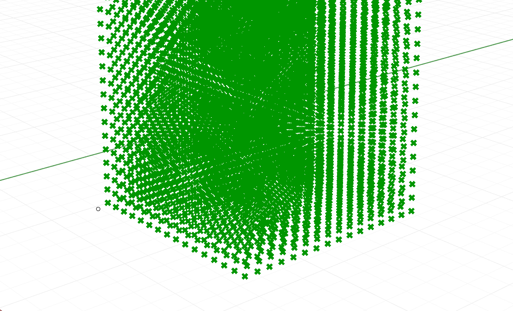
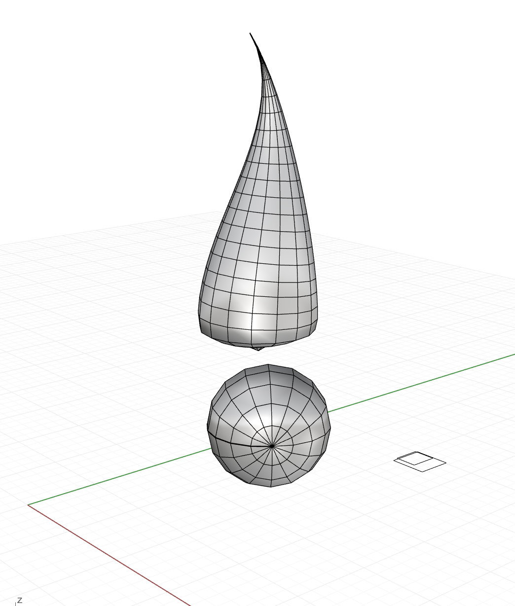
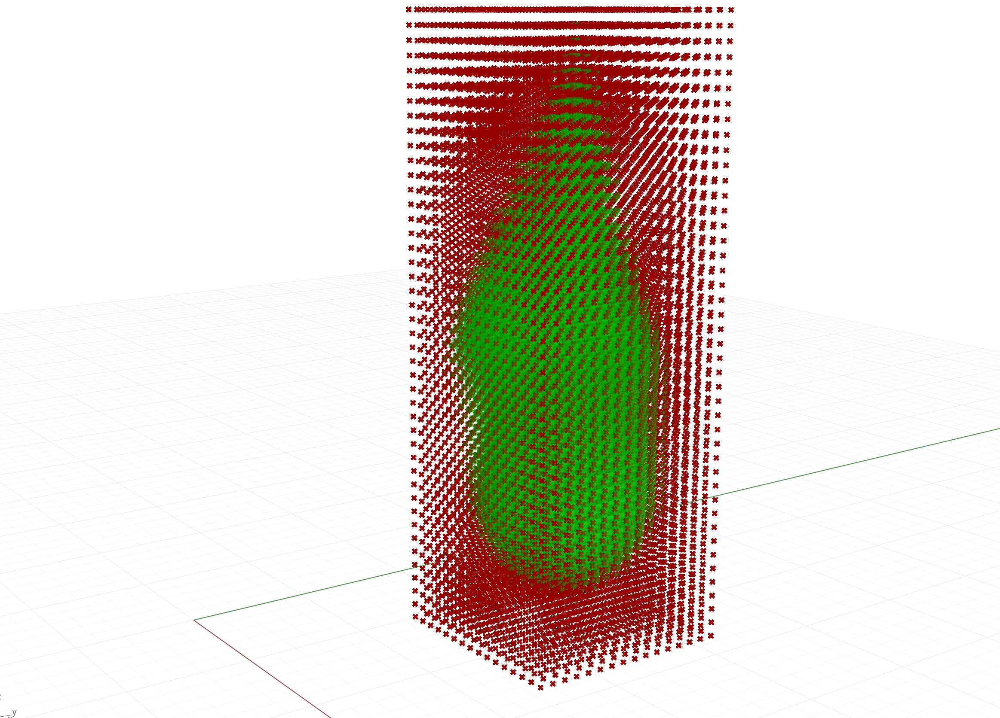
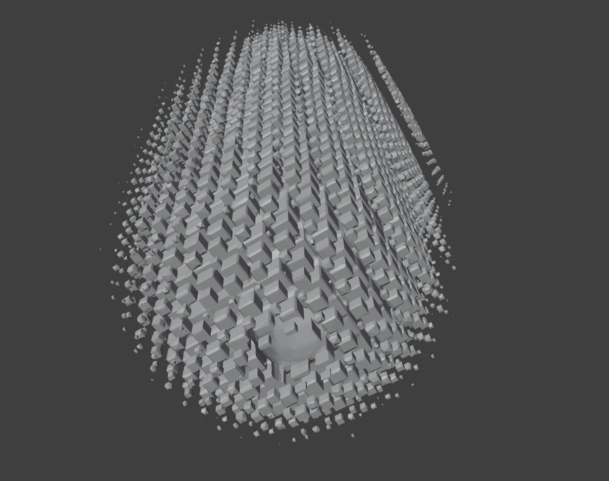
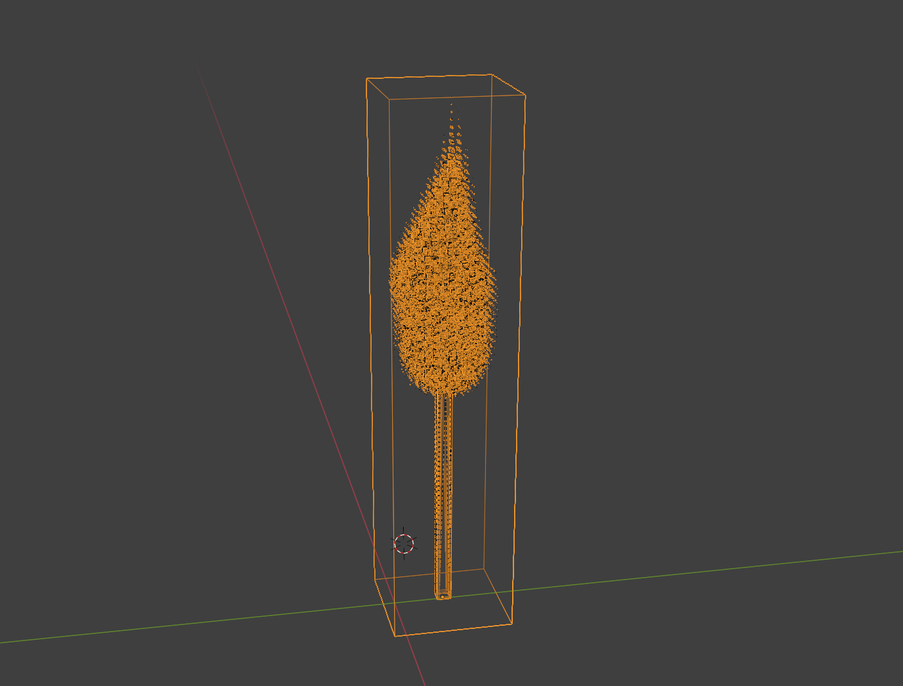

A 3D-printed flame.
First, create a 3D grid of voxels, or volumetric pixels, in Grasshopper.

Then create some 3D objects based on a real match flame -- a sphere around the match head, and a conical piped curve for the flame tip.

Then, create a signed distance field that measures the distance of every voxel in our grid to the nearest point on the surface of our two shapes. Find the smooth union between the two shapes to blend them. Then create a cube for every voxel in the grid that has a negative sign, because that means it is inside the flameshape.

Modulate the size of each cube based on its distance to the surface of the flame. This will create a smooth transition between the flame and the air around it, like a real flame.
First we have to normalize (!) the maximum cube size to the maximum distance than any voxel inside the flame is from the surface of the flameshape.
// make a new list to store our cubes
List<Mesh> cubes = new List<Mesh>();
// figure out the maximum sdf value, so we can normalize our cube size
double maxAbsSdf = sdf
.Where(val => (double)val < 0)
.Select(val => Math.Abs((double)val))
.Max();
Then for every point and its voxel in the grid, create a cube at that point if it's inside the flame. (I'm putting my well commented code here to help future me remember how to structure grasshopper scripts. It was tricky to relearn this syntax after spending the past few months in python/javascript.)
for (int i = 0; i < points.Count; i++)
{
Point3d pt = (Point3d)points[i];
// find the sdf value of this point's location
var sdfValue = (double)sdf[i];
// if the point's value is negative, it's inside the flame
// so we want to make a cube there
if (sdfValue < 0)
{
// make the cube bigger the more negative it is
// first figure out what the cube's size should be
double sdfAbs = Math.Abs(sdfValue);
double normalized = sdfAbs / maxAbsSdf;
double size = normalized * maxCubeSize;
// make a new box of that size
Box box = new Box(
Plane.WorldXY,
new Interval(-size/2, size/2),
new Interval(-size/2, size/2),
new Interval(-size/2, size/2)
);
// move the box into the right spot
box.Transform(Transform.Translation(pt.X, pt.Y, pt.Z));
// turn the box into an actual cube mesh
Mesh cubeMesh = Mesh.CreateFromBox(box, 1,1,1);
cubes.Add(cubeMesh);
}
// else do nothing for sdfValue >= 0
}
After baking out the mesh, I exported the flame and brought it into Blender because goodness gracious I had no idea how to use Rhino to do these next steps. I'm 100% certain it's doable, but you have to choose the tools that cause the least friction for your creativity.

First I massively simplified the mesh of cubes using a remesh modifier so it wouldn't put Blender in a blender. Then I modelled a matchstick and subtracted it from the flame's cubes using a boolean modifier. You can see the little hole. Then I made a clear bounding box and subtracted both the matchstick and the flame from it using another boolean modifier. It's not the cleanest way to do any of this, and it left some artifacts that would be noticeable at a larger scale, but it worked great for this project and only crashed Blender seven times.

Finally I exported each layer -- the matchstick, the flame, and the clear bounding box -- as their own STL and sent it to the resin printer for fabrication.
Kidding, this was not the final step. The final step was sanding it for two hours. I left one surface unsanded because I liked the way the resin's natural striations amplify the moiree and cause the flame to almost flicker.
So many parts of this project blew my mind -- how strangely intuitive signed distance fields are, how comfortable grasshopper feels when you jump back into it after 5 months away, how important it is to do test prints beforehand to understand the way light moves through different materials. It's also just magic that we can turn silly ideas into physical objects with math and code and effort.
I love you Grasshopper, you noodly little tool. Most of these components are credit to Jose Luis, but the one on the far right is my c# script that generates the flame cubes, and is shown in the code above.